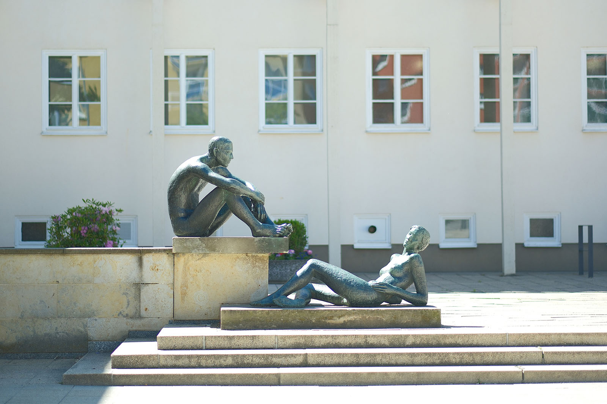
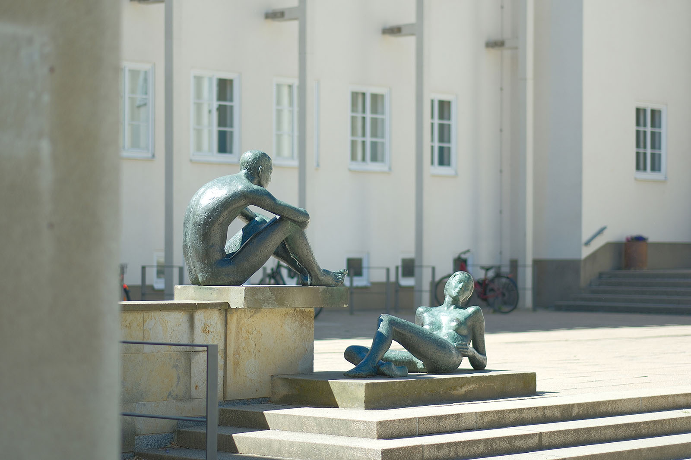
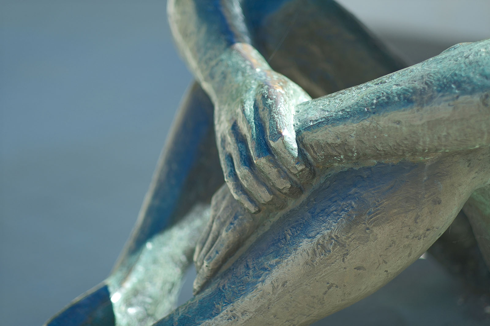
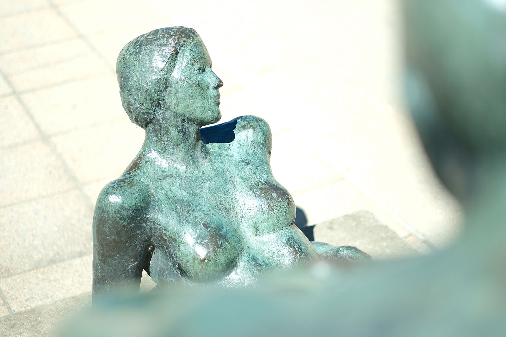
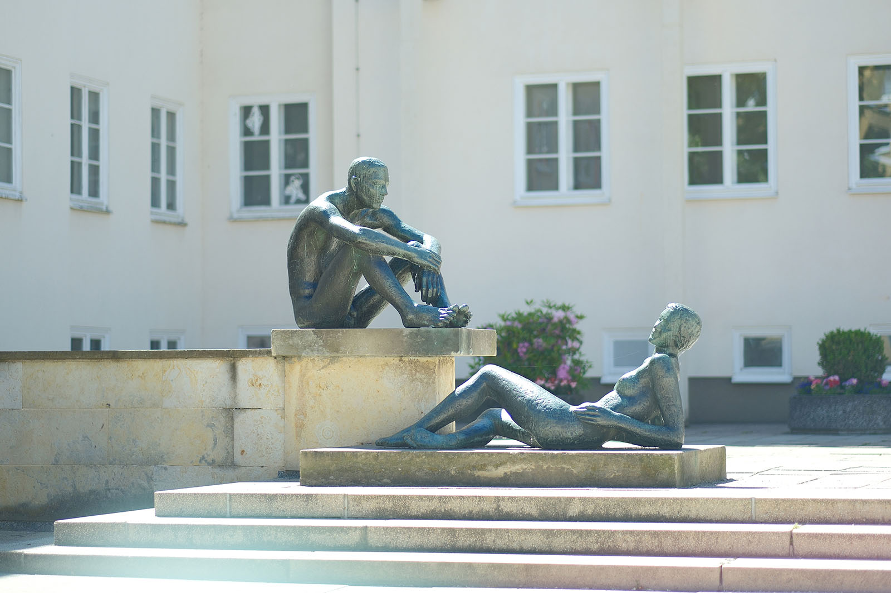

Recherche und Werkbeschreibung: Roman Pilz. Text und Fotografien wechseln sich wie in einem Magazin ab. Ein Klick auf ein Bild öffnet die Großansicht.
Die zweiteilige Bronzeplastik "Paar" von Harald Stephan nimmt gleich in zweierlei Hinsicht Bezug auf den Ort, an dem sie aufgestellt wurde: räumlich und zeitlich.
Als der Bildhauer Stephan im Zuge der umfassenden Renovierungsarbeiten des Chemnitzer Stadtbads von 1981 bis 1983 von der Stadt und dem Bezirk Karl-Marx-Stadt den Auftrag erhielt, ein Kunstwerk zu schaffen, ging es neben dem Erhalt des mittlerweile unter Denkmalschutz stehenden Architekturensembles von Fred Otto auch darum, eine Lücke zu schließen, die vergangene Politik und Krieg geschlagen hatten.
Harald Stephan wurde 1939 in Mildenau im Erzgebirge geboren. Stephan war 1955 bis 1958 an der Arbeiter-und-Bauern-Fakultät für Bildende Kunst in Dresden. Danach studierte er 1959 bis 1964 Plastik an der Hochschule für bildende Künste Dresden bei Gerd Jaeger.
Von 1964 bis 1976 war er freischaffend tätig. Während dieser Zeit (1974/75) war er zusätzlich Meisterschüler bei Gerhard Geyer an der Akademie der Künste Berlin. Stephan arbeitet in Holz, Bronze und Beton.
a im Park am Falkeplatz, im Park dem Schloßberg, im Rosarium im Stadtpark und im Stadthallenpark. Der Bildhauer lebte und arbeitete in Chemnitz, bis er 1997 in das Erzgebirge, nach Siebenhöfen (Tannenberg), zog.
Vertraute Zweisamkeit
Die Bronzeplastik „Paar“ von Harald Stephan am Stadtbad (1983)
Ursprünglich wurde 1935 am selben Standort nämlich die Figurengruppe "Aus dem Badeleben" des Chemnitzer Bildhauers Heinrich Brenner (1883–1960), Mitglied der Künstlergruppe Chemnitz, aufgestellt. Wohl auch, weil Brenner politisch nicht ganz auf der Linie der Nationalsozialisten war, wurde sein Werk 1942 für die Rüstungsindustrie eingeschmolzen.
Für Harald Stephan, der rein figürlich arbeitet und sich schwerpunktmäßig dem weiblichen Akt als Thema widmet, war Brenners in Fotografien überliefertes Werk sicherlich ein Bezugspunkt. Auch bei Brenner sind ein Mann und eine Frau als Figurenpaar dargestellt – doch die Dynamik zwischen den Figuren ist eine vollkommen andere.
Bei Brenner ist, entsprechend der Funktion des Bauwerks, eine Badszene dargestellt: der Mann beim Schwimmen, die Frau sitzt erhöht und trocknet sich mit einem Badetuch. Doch während bei Brenner der Mann ernst unter dem Schoß der Frau im Wasser vorwärts drängt und sich mit geballter Faust von dieser wegzustoßen scheint, wird bei Stephan geflirtet.
1982, als die Figurengruppe aufgestellt wurde, haben sich die Zeiten geändert: Der Magnetismus wechselt die Richtung und die Positionen sind vertauscht. Nun sitzt der junge Mann über der Frau allein auf der Mauer, während diese sich in der Sonne trocknet. Auf dem Platz vor dem Hallenbad spielt sich eine Szene aus dem Freibad ab und wir stellen uns vor, dort, wo das Wassergetier des Bildhauers Ziegler um die Fahnenmasten wimmelt, ist das Ufer eines Flusses oder eines Sees.

Auch die Freikörper-Badekultur, die in der ehemaligen DDR besonders verbreitet war, klingt an. Aber da ist noch mehr: Neben dem Naturerlebnis und der Körperertüchtigung ist das öffentliche Bad sicher auch ein Ort der Blicke und, vor allem bei jungen Leuten, ein Spielfeld erster Tändeleien und neuer Liebe.
Wo sich bei Brenner die Blicke noch nicht einmal berühren, findet bei Stephan alles im Blickfeld der scheinbar ruhenden Figuren statt. Der junge Mann wird zum Beobachter holder Weiblichkeit – ob zum entrückten Bewunderer, später Anerkannten oder zum Voyeur – es hängt ganz von der Frau ab und vom Betrachter.
Der momenthafte Charakter der Darstellung lässt alles offen. Die Schöne neigt zwar ihren Kopf leicht zur Seite, wie um sich dem Blick zu entziehen, aber doch so unentschieden, dass sie die Präsenz des Betrachters wohl ganz wahrnimmt. Vielleicht badet sie nicht nur in den wärmenden Strahlen der Sonne, sondern auch in der wohltuenden Wertschätzung und Anerkennung des Anderen? Ihre ganze Körperhaltung wirkt vollkommen ungezwungen, so dass man sich immer mehr überzeugt: Die beiden sind schon ein Paar – aber alles ist noch so frisch, dass es knistert. Und wer weiß, wie lange das hält?
Jugend und unbeschwertes, von Zwängen befreites Freizeitglück waren durchaus Ideale, die im Sozialismus plakativ idealisiert wurden – in dieser Hinsicht kann das Paar dem Sozialistischen Realismus zugeordnet werden. Indem der Bildhauer Harald Stephan seine Figuren aber von jeglichen individuellen und historischen Bezügen befreit und im buchstäblichen Sinne ganz nackt in eine lebensweltlich ganz konkrete und über alle Zeiten hinweg menschliche Situation wirft, bleibt das "Paar" auch heute lesbar und Anknüpfungspunkt neuer Einschätzungen im Wandel der Zeiten.

Harald Stephan wurde 1939 in Mildenau im Erzgebirge geboren. Stephan war 1955 bis 1958 an der Arbeiter-und-Bauern-Fakultät für Bildende Kunst in Dresden. Danach studierte er 1959 bis 1964 Plastik an der Hochschule für bildende Künste Dresden bei Gerd Jaeger.
Von 1964 bis 1976 war er freischaffend tätig. Während dieser Zeit (1974/75) war er zusätzlich Meisterschüler bei Gerhard Geyer an der Akademie der Künste Berlin. Stephan arbeitet in Holz, Bronze und Beton.
a im Park am Falkeplatz, im Park dem Schloßberg, im Rosarium im Stadtpark und im Stadthallenpark. Der Bildhauer lebte und arbeitete in Chemnitz, bis er 1997 in das Erzgebirge, nach Siebenhöfen (Tannenberg), zog.

Vertraute Zweisamkeit
Die Bronzeplastik „Paar“ von Harald Stephan am Stadtbad (1983)
